王红元
微博：coderwhy
微信：372623326


 JavaScript原始功能
JavaScript原始功能
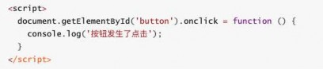
在网页开发的早期，js制作作为一种脚本语言，做一些简单的表单验证或动画
实现等，那个时候代码还是很少的。
那个时候的代码是怎么写的呢？直接将代码写在<script>标签中即可
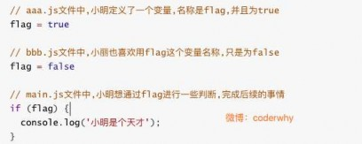
随着ajax异步请求的出现，慢慢形成了前后端的分离
客户端需要完成的事情越来越多，代码量也是与日俱增。
为了应对代码量的剧增，我们通常会将代码组织在多个js文件中，进行维
护。
但是这种维护方式，依然不能避免一些灾难性的问题。
小明后来发现代码不能正常运行，去检
查自己的变量，发现确实true
最后杯具发生了，小明加班到2点还是没
有找到问题出在哪里(所以，某些加班真
的是无意义的)
比如全局变量同名问题：看右边的例子
另外，这种代码的编写方式对js文件的依赖顺序几乎是强制性的
但是当js文件过多，比如有几十个的时候，弄清楚它们的顺序是一件比较
同时的事情。

而且即使你弄清楚顺序了，也不能避免上面出现的这种尴尬问题的发生。

 匿名函数的解决方案
匿名函数的解决方案
我们可以使用匿名函数来解决方面的重名问题
在aaa.js文件中，我们使用匿名函数
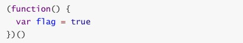
但是如果我们希望在main.js文件中，用到flag，应该如何处理呢？

显然，另外一个文件中不容易使用，因为flag是一个局部变量。

 使用模块作为出口
使用模块作为出口
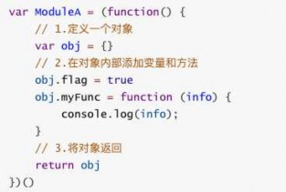
我们可以使用将需要暴露到外面的变量，使用一个模块作为出口，什么意思呢？
来看下对应的代码：
我们做了什么事情呢？
非常简单，在匿名函数内部，定义一个对象。
给对象添加各种需要暴露到外面的属性和方法(不需要暴露的直接定义即可)。
最后将这个对象返回，并且在外面使用了一个MoudleA接受。
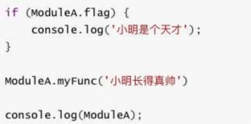
接下来，我们在man.js中怎么使用呢？
我们只需要使用属于自己模块的属性和方法即可
这就是模块最基础的封装，事实上模块的封装还有很多高级的话题：
但是我们这里就是要认识一下为什么需要模块，以及模块的原始雏形。
幸运的是，前端模块化开发已经有了很多既有的规范，以及对应的实现方案。
常见的模块化规范：

CommonJS、AMD、CMD，也有ES6的Modules

 CommonJS（了解）
CommonJS（了解）
模块化有两个核心：导出和导入
CommonJS的导出：
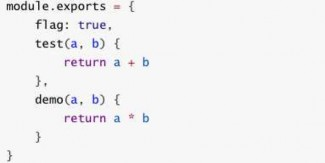

CommonJS的导入
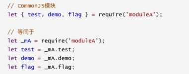

 export基本使用
export基本使用
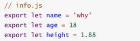

上面的代码还有另外一种写法：
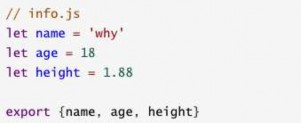

 导出函数或类
导出函数或类
上面我们主要是输出变量，也可以输出函数或者输出类

上面的代码也可以写成这种形式：
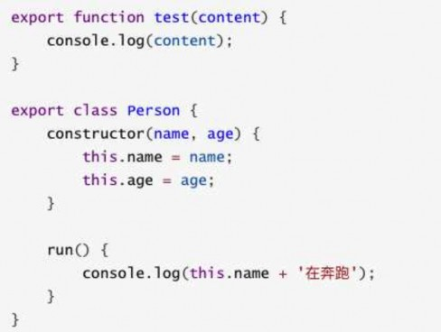 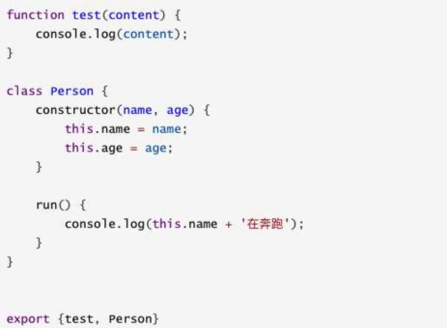

 export default
export default
某些情况下，一个模块中包含某个的功能，我们并不希望给这个功能命名，而且让导入者可以自己来命名
这个时候就可以使用export default
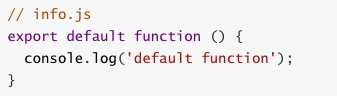
我们来到main.js中，这样使用就可以了
这里的myFunc是我自己命名的，你可以根据需要命名它对应的名字
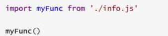
另外，需要注意：

export default在同一个模块中，不允许同时存在多个。

 import使用
import使用
我们使用export指令导出了模块对外提供的接口，下面我们就可以通过import命令来加载对应的这个模块了
首先，我们需要在HTML代码中引入两个js文件，并且类型需要设置为module
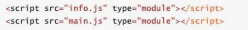
import指令用于导入模块中的内容，比如main.js的代码
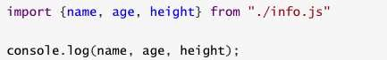
如果我们希望某个模块中所有的信息都导入，一个个导入显然有些麻烦：
通过*可以导入模块中所有的export变量

但是通常情况下我们需要给*起一个别名，方便后续的使用
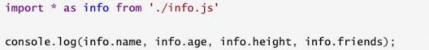